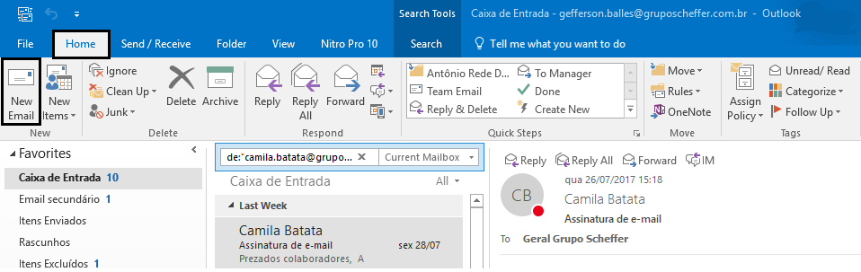
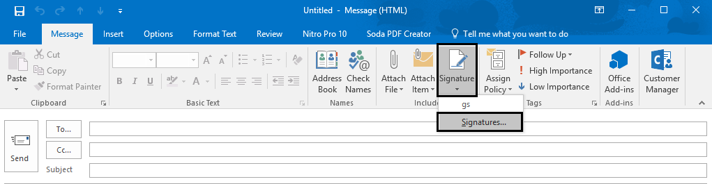
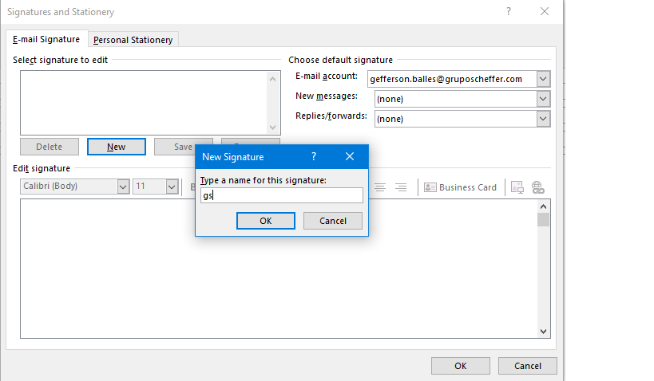
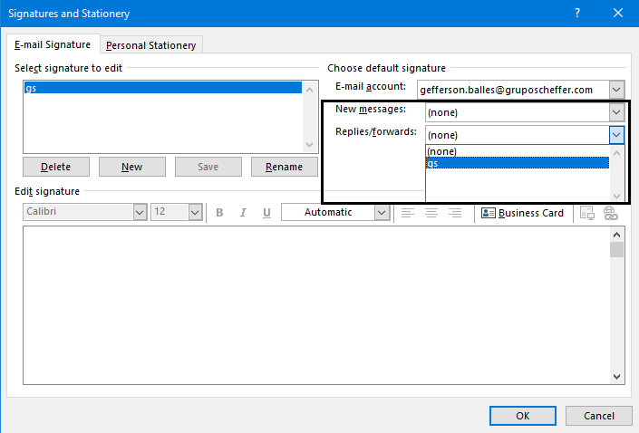
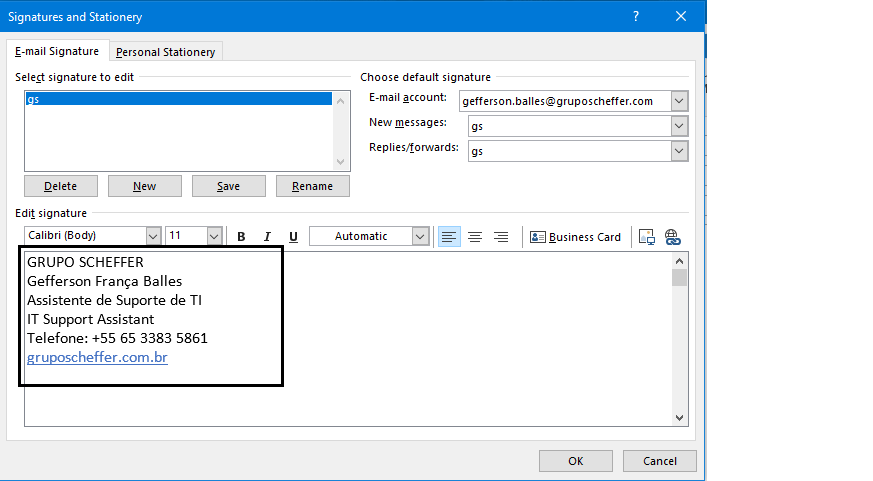
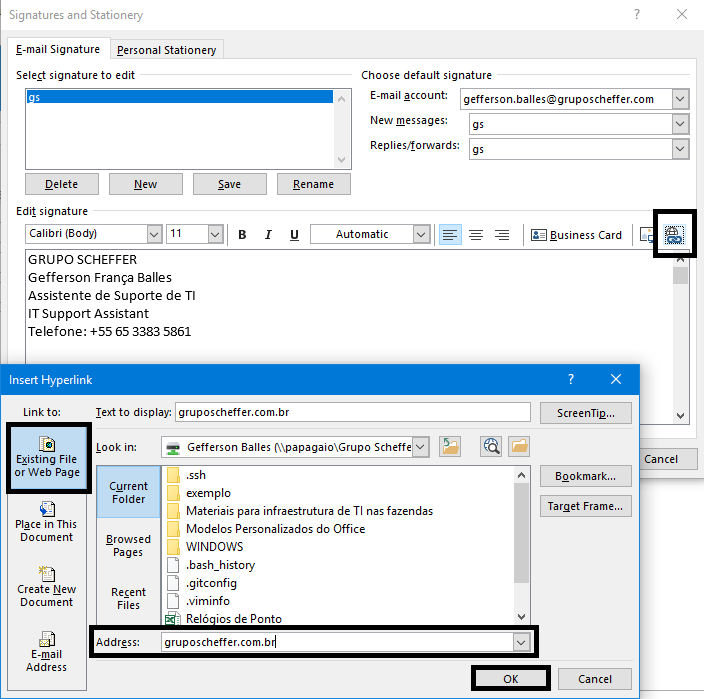
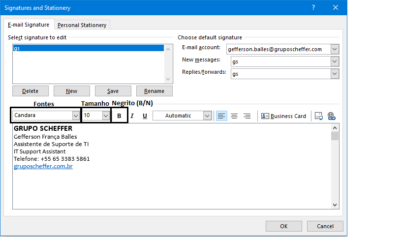
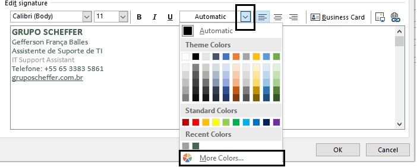
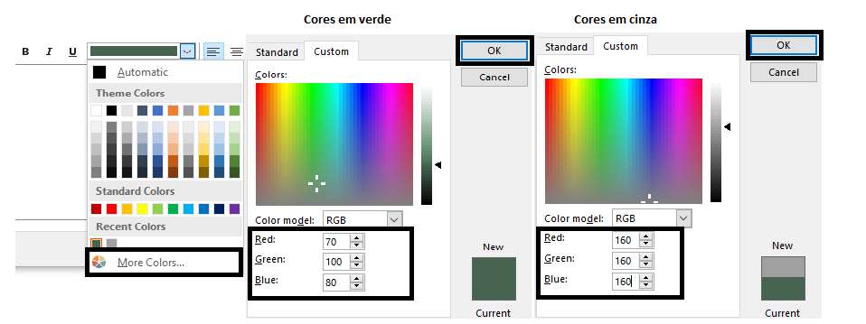
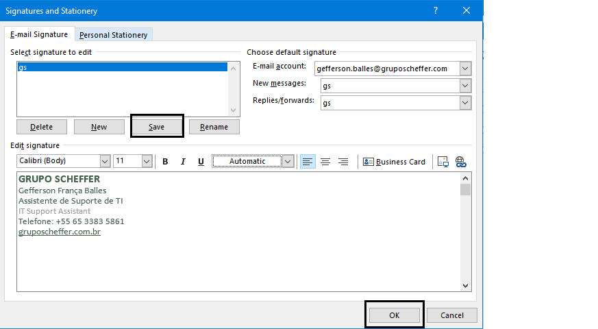

Configurando assinatura de E-mail¶
Acessando página de assinaturas¶
Em Home/Página inicial clica em New Email/Novo Email.

Na nova janela clica em Signature/Assinaturas.

Criando assinatura¶
Na tela Assinaturas e Papel de Carta clique em New/Novo, adicione um nome à nova assinatura e clica em Ok.

Depois, em New messages/Novas mensagens e Replies/forwards e Respostas/Encaminhamentos selecione gs.

Corpo da Assinatura¶
Insira o corpo da assinatura com o nome do Grupo em maiúsculo, nome próprio, cargo em Português e Inglês, seguido dos números dos telefones (ramais e telefone celular), e por último o Hiperlink "gruposcheffer.com.br".
- Ps: Segundo orientação do Setor Jurídico, é vedado o uso de números de telefones particulares nas assinaturas, exceto números corporativos. Caso não tenha um número corporativo, apagar campo Celular.
Segue exemplo abaixo.

Gerando Hiperlink¶
Para gerar o Hiperlink, é preciso clicar no ícone Hiperlink, no campo Address/Endereço digite o site "gruposcheffer.com.br", e por fim clicar em Ok.

Instruções para configuração de Fontes e Cores.¶
1 - Nome da empresa em verde, Fonte Calibri 12 pt em Negrito.
2 - Nome e cargo (em Português) em verde, Fonte Candara 10 pt.
3 - Cargo (em inglês) em cinza, Fonte Calibri 10 pt.
4 - Telefones para contato em verde, Fonte Calibri 10 pt.
5 - Site em verde, Fonte Candara 10 pt (com hiperlink).
Observação importante: procure no seu programa de e-mail a escala de cores RGB para alterar as cores das fontes. Em verde: V 70, V 100, A 80 e em cinza: V 160, V 160, A 160.
Alterando Fontes¶
Para alterar as Fontes e cores da Assinatura basta selecionar o texto que deseja alterar, como na imagem abaixo, procure as fontes e o tamanho das fontes conforme descrito em Instruções para configuração de Fontes e Cores.

Alterando Cores¶
Para alterar as cores das fontes é preciso selecionar o texto como na imagem abaixo, clicar na seta do campo Cores, clicar em More colors.../Mais cores e em Custom/Personalizar. Como descrito nas Instruções para configuração de Fontes e Cores, o texto em verde deve ficar com as seguintes configurações.
 
Por fim, clique em Save/Salvar para salvar a assinatura e em Ok para finalizar a configuração da Assinatura.
